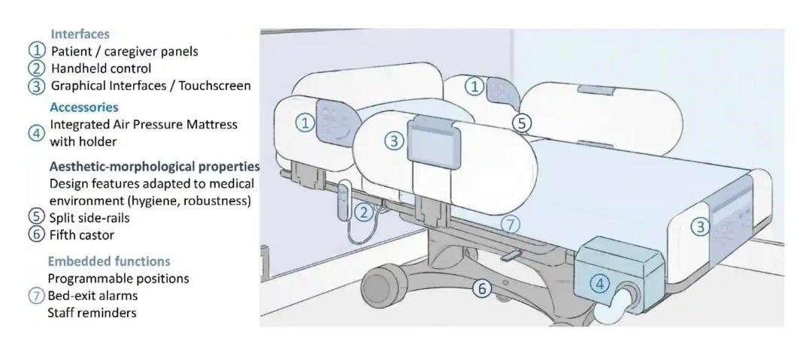

Smart Healthcare
Smart healthcare is a health service system that uses technology such as wearable devices, IoT, and mobile internet to dynamically access information, connect people, materials and institutions related to healthcare, and then actively manages and responds to medical ecosystem needs in an intelligent manner.
In light of a smart healthcare system, smart changes are also being made to hospital beds concerning the product design and manufacturing processes, as well as a patient’s perspectives on patient-care environments and accessibility.
This webpage represents an analytical research based on an online survey taken on smart hospital beds, in a project under the Ministry of Health and Family Welfare that focuses on an innovative and comfortable bed design for patients.
Literature Survey
Smart beds have emerged in the past decades as integrated solutions for patient care, assistance and monitoring and is based on a comprehensive, multidisciplinary design process.
Available smart beds designs, prototypes and proposals have varied systems for fall and agitation detection, active sensor networks, pressure-distribution matrices over the surface of the bed, emit alarms or act autonomously against detected hazards.
One such device developed by Leaf Healthcare Inc. has patient-motion sensors in contact with the subject which can perform similar tasks concerning detection and alert of lack of mobility.
Most of these smart beds incorporates the use of Wireless Medical Sensor Networks (WMSNs). These sensors can detect health-related parameters like glucose level, heart rate, temperature, breathing levels etc. and can monitor the patient continuously using wireless networ
Sensors can be embedded or placed on human body (wearable), and can wirelessly connect and share information to monitor the patient’s body conditions.
Reference was taken from two research papers- “A Study of the Design of Wireless Medical Sensor Network based uber Healthcare System” and “Smart medical beds in patient-care environments of the twenty-first century: a state-of-art survey”.
Applications
1. Fall Risk Assessment and Pressure Ulcer Occurrence Warnings:
Most accidents occurring at medical institutions treating elderly patients with mobility impairment are bedsores and fall accidents.
In smart beds, several pressure sensors are deployed underneath the mattress cover to consider both peoples’ standard physical characteristics and the specific body parts where bedsores commonly occur.
2. Contact free respiration monitor:
The development of a contact-free respiration monitor has a broad range of clinical applications in the home and hospital setting.
Current approaches suffer from a variety of problems including unreliability, low sensitivity, and high cost.
